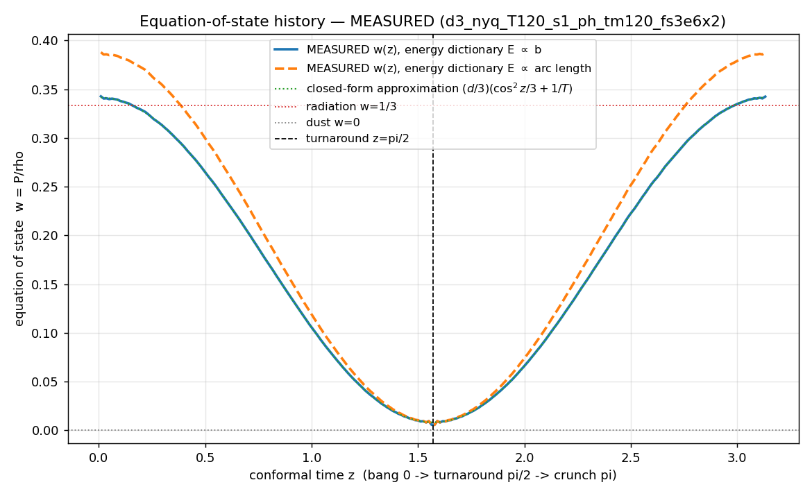
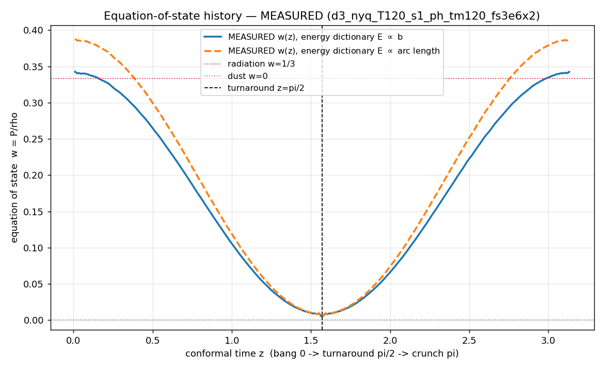
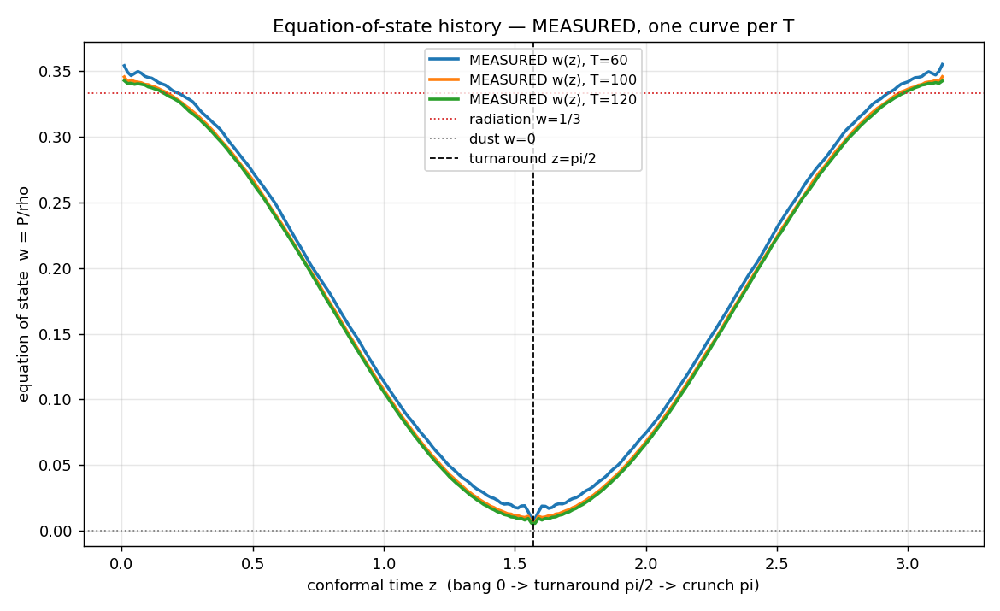

Errata: the 07-27 frame videos were re-rendered — three fixes
Renderer fixes
7b92b86,
dd64c7b
· slo-mo re-bake in
49b8571
· every video on the 07-27 page
is the corrected version; the originals are superseded
Blueshift was clamped out (found by Kevin). The
first renders clipped the color scale at ln(1+Z) = 0,
painting every blueshifted image with the zero-shift color.
Blueshift is generic in the contracting half (light emitted when
the universe was larger arrives with 1+Z < 1), so
post-turnaround skies were qualitatively wrong.
Palette now matches the visualizer exactly
(Kevin). The renderer ports the viewer's redshiftRGB law verbatim
— black sky, white = unshifted, white →
deep red for redshift, white → deep blue for
blueshift, uRedNorm = 1.2 with the 0.6-power boost.
The port also surfaced a latent moving-mode bug: the Doppler log
must be subtracted from the cosmological log (an
observer moving toward a source sees blueshift); the previous
sign inverted it. Static-observer videos were unaffected.
The Bang slo-mo opened a quarter short (found by
Chris, to the digit: he estimated the opening reach at ~0.9 vs
the expected ≈1.26). The 0.01π rewind floor — the
viewer's stop-short-of-the-Bang convention — truncates the
budget reach hardest exactly in the slo-mo window: measured
χmax(first frame) = 0.950 at that floor
vs 1.246 with the floor at the 2×10⁻³ rad
numerical clamp. Re-baked: the sky now opens fully tiled at the
full reach, its horizon light arriving from ~0.0006π after
the Bang at redshifts in the hundreds.
The w(z) chart, clarified: which curves are data — and is the shape timestep-invariant?
Chart relabeling + a multi-T view of the stored FULLSPEC dumps (no
new campaign) ·
bb4fccf
Chris read the 07-27 w(z) chart's blue/orange curves as theory
predictions ("quantum wave" vs "string") and the green dotted line
as a fit to data — exactly backwards, which means the labels
failed. For the record: blue and orange are both MEASURED
data — the same measured packing's w(z), weighted
under two different energy dictionaries (E ∝ b and
E ∝ arc length; their agreement is the
dictionary-robustness check) — and the green dotted
line is the closed-form approximation
(d/3)(cos²z/3 + 1/T). The chart now says MEASURED
in the legend, and a data-only version exists.

Relabeled: MEASURED w(z) under both dictionaries (3+1,
T = 120), closed-form approximation dotted.

Data only (Chris's request): no approximation overlay.

Is it timestep-invariant? Nearly: MEASURED w(z) for
T = 60/100/120 collapse onto one shape. The only
T-dependence is the additive 1/T dust floor — visible as the
T = 60 curve riding slightly high, most clearly at the
turnaround where wmin = d/(6T). As
T → ∞ the curve converges to
(d/9)cos²z: radiation ⅓ at the endpoints, exact dust at
the turnaround.
FULLSUB complete: the full-spectrum model holds ~10× the subpath capacity, and the dust law survives arbitrary filling
Kevin's design: mirror fullspec2d_e6 with second-phase subpath
packing, to check (a) whether the subpath admission decay matches
the 2-term model's, and (b) whether the ensemble laws survive when
the packing is filled with "as many subpaths as we want" — the
worry being a scenario where uniques sit at w ≈ 0
but subpaths ran hot.
The campaign in three panels: capacity, growth decay, and the
dust-law stability check.
Capacity: ~10× the baseline. At
T = 100 the full-spectrum jam retains 20 subpaths per
unique (22k subpaths on 1.1k uniques) within a 1e9 budget; the
2-term baseline retained 2.0 within a 1e10 budget. The
full-spectrum exclusion leaves far more threadable volume
(28–84% of collision cells filled vs 13–44%).
Decay: same structure, cleaner. Subpaths never
jam in either model — Nsub ~
attemptsγ with γ near 1 and no collapse.
The fullspec γ drifts smoothly 1.06 → 0.93
over T = 5–100 with tight seed scatter (the
baseline's 0.75–0.99 wobbles are consistent within their
larger errors). Depth cutoff, not a jam — unchanged.
The dust law survives filling exactly.
w(all paths) = w(uniques) = d/(6T) to 3–4 decimals at every
rung — even T = 20's ~850× filling —
and the per-population split on an ordered T = 150 cell
(2,075 uniques + 15,266 subpaths) gives wuniq =
0.00226, wsub = 0.00224 vs predicted 0.00222, with
identical mover-speed distributions. Kevin's hot-subpath scenario
is null: subpaths are kinematically indistinguishable from
uniques, so every ensemble law (dust, radiation→dust
history, uniformity) is stable under arbitrary subpath
filling.
Ops notes. The 2-term campaigns' 1e10 phase-2
budget was rescaled to 1e9 (fullspec attempt cost ~30×;
same wall-clock depth). Small-T cells still grind: high admission
rates pin the round batch at its 4,096 floor (~244k GPU rounds
per cell) — future subpath campaigns should use the
fill-rate stop or scale the budget with T (queued). The store's
attempts column records phase-1 attempts only for subpath runs
(the runner grabs the first of two engine "in N attempts" lines;
phase-2 attempts live in the curves). Dump subsampling is now
order-preserving
(2cfa78d)
so the gid = row-index unique/subpath split survives collection;
this campaign's dumps predate the fix and are split-safe only via
group membership.
![Three panels. Left: subpaths per unique versus T on a log scale — the fullspec curve runs from tens of thousands at T=5 to 20 at T=100, roughly ten times the 2-term baseline at matched T despite a ten times smaller attempt budget. Middle: tail growth exponent gamma versus T — fullspec drifts smoothly from 1.06 to 0.93 with tight error bars while the baseline scatters between 0.75 and 0.99; neither collapses toward zero. Right: turnaround w versus T — uniques-only squares and all-paths circles both sit exactly on the d over 6T dust-law curve.](fullsub_summary.png)